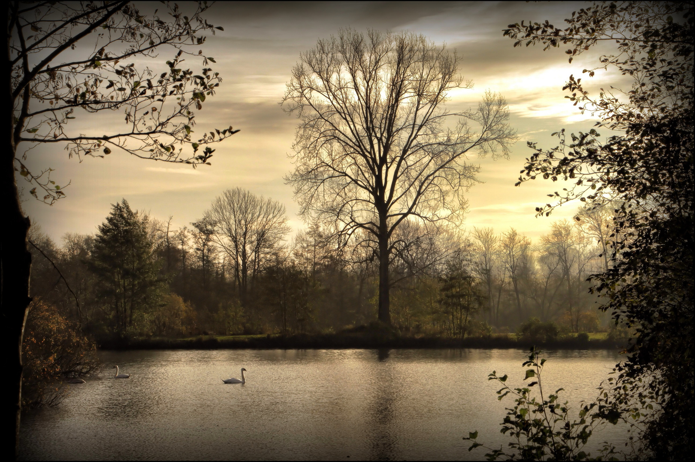
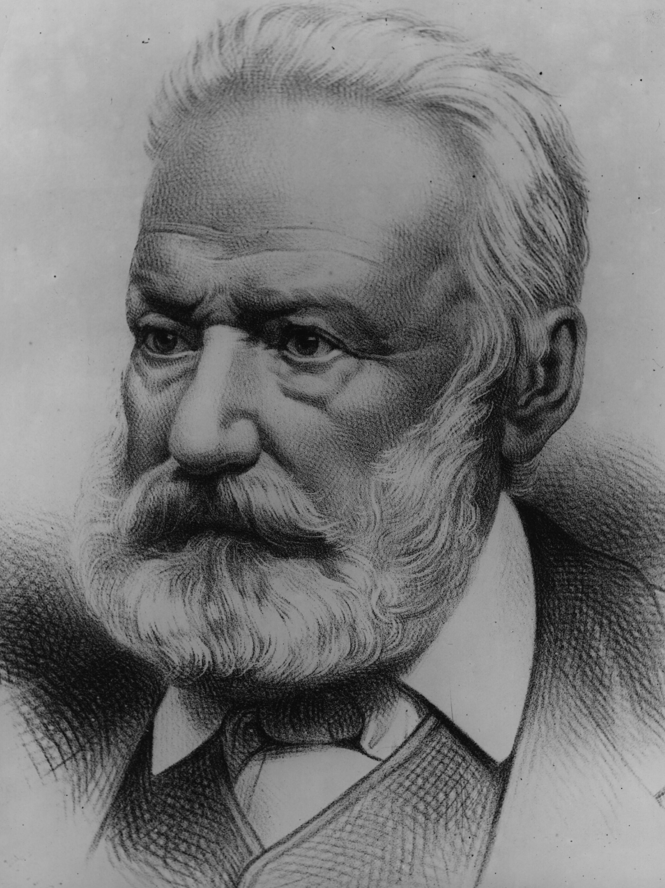
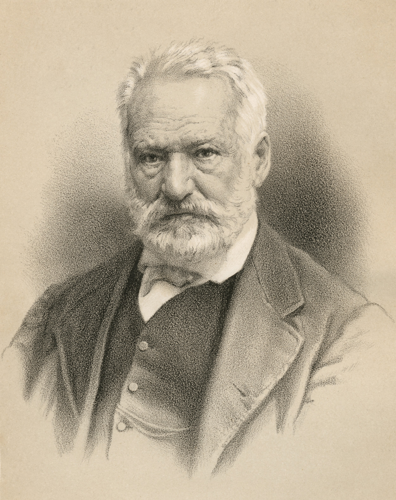
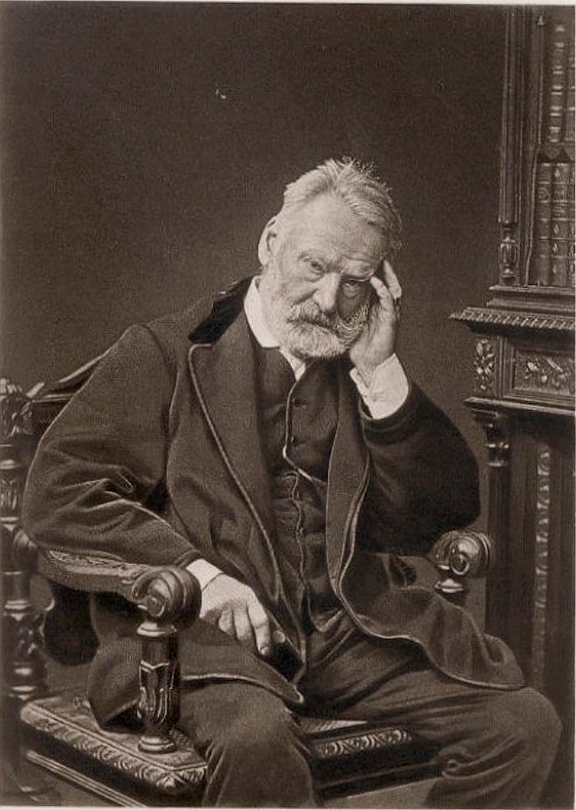
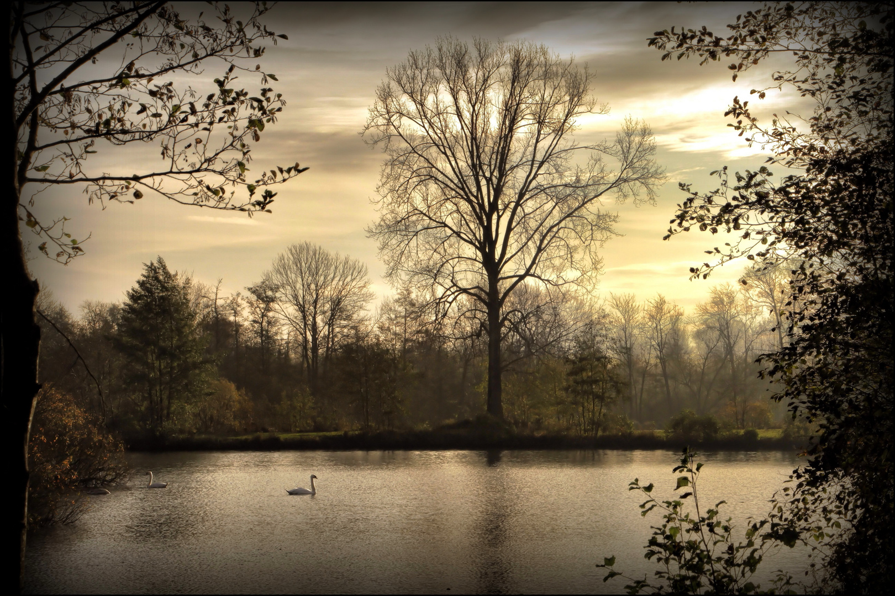
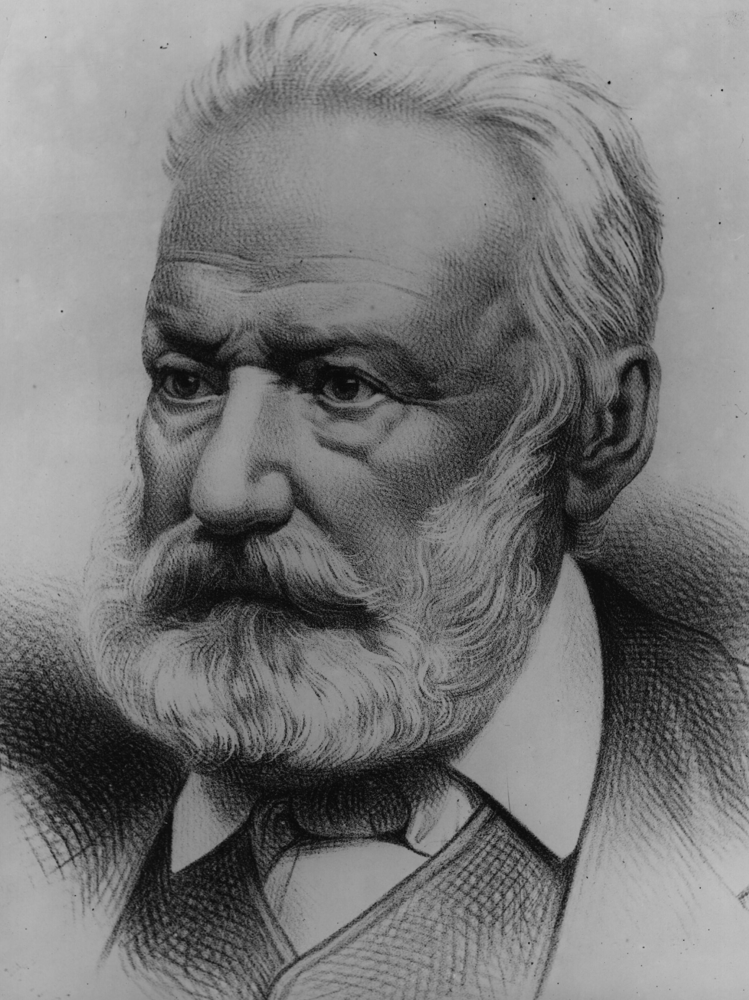
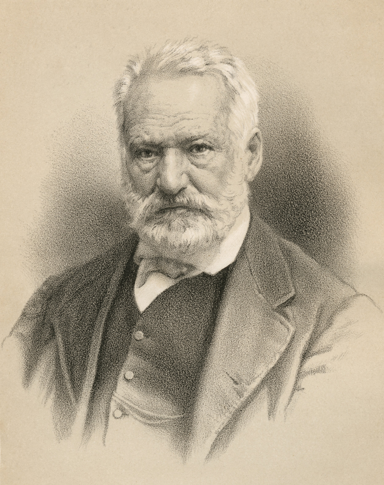
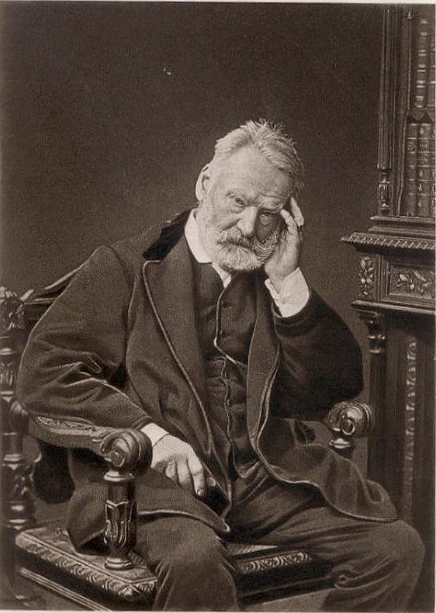

Victor Hugo
Victor Hugo est un poète, dramaturge, écrivain, romancier et dessinateur romantique français, né le 7 ventôse an
X (26 février 1802) à Besançon et mort le 22 mai 1885 à Paris.
Il est considéré comme l'un des plus importants écrivains de langue française.
Il est aussi une personnalité politique et un intellectuel engagé qui a eu un rôle idéologique majeur et occupe une place marquante dans l'histoire des lettres françaises au xixe siècle, dans des genres et des domaines d’une remarquable variété.
Au théâtre, Victor Hugo se manifeste comme un des chefs de file du romantisme français lorsqu'il expose sa théorie du drame
romantique dans les préfaces qui introduisent Cromwell en 18274, puis Hernani en 1830 qui sont de véritables manifestes, puis par
ses autres œuvres dramatiques : Ruy Blas en 1838, mais aussi Lucrèce Borgia et Le Roi s'amuse.
Victor Hugo est aussi un poète lyrique avec des recueils comme Odes et Ballades (1826), Les Feuilles d'automne (1831) ou
Les Contemplations (1856), mais il est aussi poète engagé contre Napoléon III dans Les Châtiments (1853) ou encore poète épique avec La Légende des siècles (1859 et 1877).
Ses romans rencontrent également un grand succès populaire, avec notamment Notre-Dame de Paris (1831), et plus encore avec Les Misérables (1862).
Son œuvre multiple comprend aussi des discours politiques à la Chambre des pairs, à l'Assemblée constituante et à l'Assemblée législative, notamment sur la peine de mort, l’école ou l’Europe, des récits de voyages (Le Rhin, 1842, ou Choses vues, posthumes, 1887 et 1890), une correspondance abondante, ainsi que de nombreux croquis et dessins à la plume et au lavis.
Victor Hugo a fortement contribué au renouvellement de la poésie et du théâtre. Il a été admiré par ses contemporains et l’est encore, mais il a aussi été contesté par certains auteurs modernes5. Il a permis à de nombreuses générations de développer une réflexion sur l’engagement de l’écrivain dans la vie politique et sociale grâce à ses multiples prises de position, choisissant de s'exiler pour vivre à Guernesey pendant les vingt ans du Second Empire.
Ses choix, à la fois moraux et politiques6, durant la deuxième partie de sa vie, et son œuvre hors du commun ont fait de lui un personnage emblématique, que la Troisième République a honoré par des funérailles nationales, qui ont accompagné le transfert de sa dépouille au Panthéon de Paris le 1er juin 1885, dix jours après sa mort.
V.H
Oeuvres principales
romans
Notre-Dame de Paris, 1831
Les Misérables, 1862
Les Travailleurs de la mer, 1866
Poésies :
Les Orientales, 1829Les Châtiments, 1853
Les Contemplations, 1856
La Légende des siècles, 1859
Théâtres :
Hernani, 1830Ruy Blas, 1838
 






